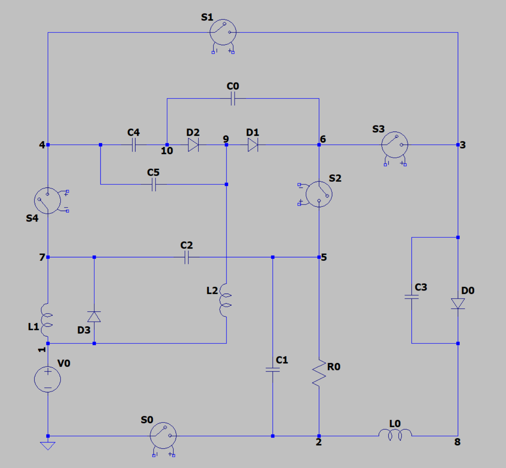

PowerElectronics#
{kind=link}
Version |
0 |
Design space |
|
Objectives |
DcGain: ↓ Voltage_Ripple: ↑ |
Conditions |
|
Dataset |
|
Import |
|
Power Electronics parameter optimization problem.
Note
This problem requires ngspice to be installed. See the simulator section for more details.
Problem Description#
This problem simulates a power converter circuit which has a fixed circuit topology. There are 5 switches, 4 diodes, 3 inductors and 6 capacitors.
The circuit topology is fixed. It is defined in the netlist file 5_4_3_6_10-dcdc_converter_1.net.
By changing circuit parameters such as capacitance, we rewrite the netlist file and use ngSpice to simulate the circuits to get the performance metrics, which are defined as the objectives of this problem.
You can use this problem to train your regression model. You can also try to find the optimal circuit parameters that minimize objectives.
Design space#
The design space is represented by a 20-dimensional vector that defines the cicuit parameters.
C0,C1,C2,C3,C4,C5: Capacitor values in Farads for each capacitor. Range: [1e-6, 2e-5].L0,L1,L2: Inductor values in Henries for each inductance. Range: [1e-6, 1e-3].T1: Duty cycle, the fraction of “on” time. Range: [0.1, 0.9]. Because all the 5 switches change their on/off state at the same time, we only need to set oneT1value. For example,T1 = 0.1means that all the switches are first turned “on” for 10% of the time, then “off” for the remaining 90%. This on-off pattern repeats at a high frequency until the simulation is over.GS0_L1,GS1_L1,GS2_L1,GS3_L1,GS4_L1: SwitchesL1. Binary values (0 or 1).GS0_L2,GS1_L2,GS2_L2,GS3_L2,GS4_L2: SwitchesL2. Binary values (0 or 1). Each switch is a voltage-controlled switch. For example,S0is controlled byV_GS0, whose voltage is defined byGS0_L1andGS0_L2. In short, 0 meansS0is off and 1 meansS0is on. For example, WhenGS0_L1 = 0andGS0_L2 = 1,S0is first turned off for timeT1 * Ts, and then turned on for(1 - T1) * Ts, whereTsis set to 5e-6. As a result, each switch can be on -> off, on -> on, off -> on, or off -> off independently.
Objectives#
The objectives are defined by the following parameters:
DcGain-0.25: The ratio of load vs. input voltage. It’s desired to be as close to a preset constant, such as 0.25, as possible.Voltage Ripple: Fluctuation of voltage on the loadR0. The lower the better.
Conditions#
There is no condition for this problem.
Simulator#
The simulator is ngSpice circuit simulator. You can download it based on your operating system:
Windows: https://sourceforge.net/projects/ngspice/files/ng-spice-rework/44.2/
MacOS:
brew install ngspiceLinux:
sudo apt-get install ngspice
Dataset#
The dataset linked to this problem is hosted on the Hugging Face Datasets Hub.
v0#
Fields#
The dataset contains 3 fields:
initial_design: The 20-dimensional design variable defined above.DcGain: The ratio of load vs. input voltage.Voltage_Ripple: The fluctuation of voltage on the loadR0.
Creation Method#
We created this dataset in 3 parts. All the 3 parts are simulated with {GS0_L1, GS1_L1, GS2_L1, GS3_L1, GS4_L1} = {1, 0, 0, 1, 1} and {GS0_L2, GS1_L2, GS2_L2, GS3_L2, GS4_L2} = {1, 0, 1, 1, 0}.
Here are the 3 parts:
6 capacitors and 3 inductors only take their min and max values.
T1ranges {0.1, 0.2, 0.3, 0.4, 0.5, 0.6, 0.7, 0.8, 0.9}. There are 2^6 * 2^3 * 9 = 4608 samples.Random sample 4608 points in the 6 + 3 + 1 = 10 dimensional space. Min and max values in each dimension will not be sampled.
Latin hypercube sample 4608 points in the 6 + 3 + 1 = 10 dimensional space. Each dimension is split into 10 intervals. Min and max values in each dimension will not be sampled.
References#
If you use this problem in your research, please cite the following paper:
Lead#
Xuliang Dong @ liangXD523